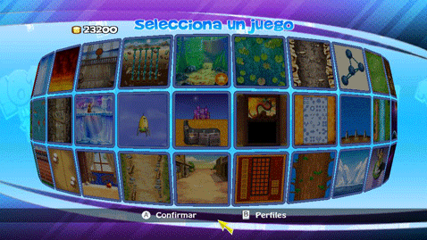

8 |
Selección del juego |
 |
|
 En el Menú de selección de juego hay tres tipos de iconos:
Puedes desplazarte por los juegos con solo mover el cursor al borde de la pantalla que quieras. Para seleccionar el juego basta con que lo apuntes con el Wii Remote. Verás la máxima puntuación en los juegos desbloqueados y el precio de desbloquear aquellos juegos que sigan bloqueados. Pulsa Además, hay un icono especial que elige al azar un juego por ti. Selecciónalo y te elegirá un juego desbloqueado. |
|||||||||

 para jugar o para desbloquearlo.
para jugar o para desbloquearlo. |
 |
 |